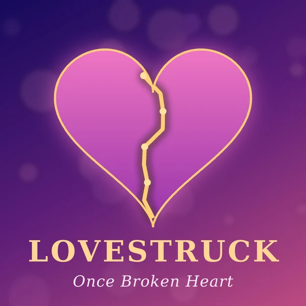

Lovestruck
Once Broken Heart
The first album of a newly formed band, Once Broken Heart, that symbolizes newfound love and that even after a broken heart, we don't lose our ability to love and be loved.
List of songs
| Side | № | Name | Duration |
|---|---|---|---|
| A | 1 | My heart is still beating | 3:42 |
| 2 | When I saw you | 4:15 | |
| 3 | Warmth you gave me | 3:28 | |
| B | 4 | Sparks in our eyes | 5:01 |
| 5 | Am I in love? | 4:36 | |
| Total duration | 21:02 | ||
Our team
- Vocals, synthesizers: Anna Marie
- Guitar: Arthur Evans
- Piano: Andrea Vanzo
- Violin: Joel Sunny
- Recording: You Dream Song, Ivano-Frankivsk